尿酸越高，抗氧化力越強？
2026-10-03
尿酸確實是血漿中重要的抗氧化物質，但進入細胞內會促氧化，大型研究也顯示尿酸越高代謝風險越高，不能以此當作安心理由。

60 篇文章
尿酸確實是血漿中重要的抗氧化物質，但進入細胞內會促氧化，大型研究也顯示尿酸越高代謝風險越高，不能以此當作安心理由。
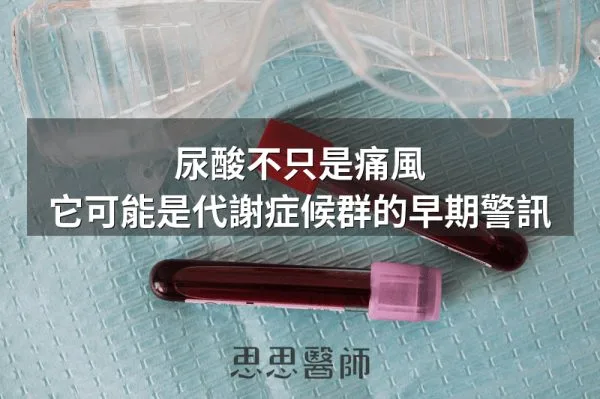
尿酸在代謝症候群真正發生前就已升高，能透過多條發炎與代謝路徑削弱胰島素敏感度，是代謝健康狀況的早期感應器。
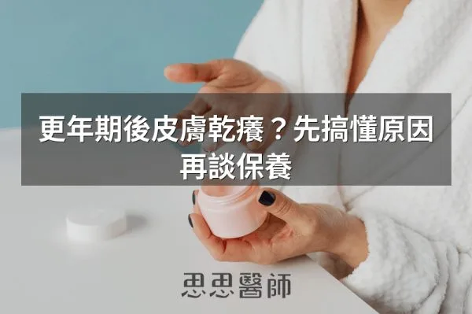
停經後雌激素下降導致膠原蛋白與皮脂分泌逐年減少，口服膠原蛋白、大豆異黃酮與 Omega-3 能從內補充改善乾燥。
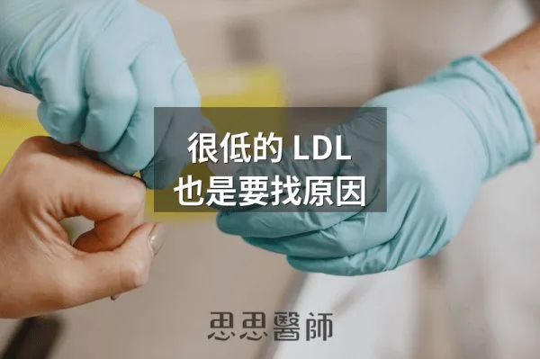
沒有使用降脂藥物但 LDL 仍低於 50 mg/dL 需要往下追，可能反映甲狀腺亢進、肝功能受損或惡性腫瘤等潛在疾病。

胖多囊以胰島素阻抗為核心、重在降胰島素；瘦多囊雄性素常來自腎上腺，需穩定血糖、重視睡眠與壓力管理，兩者治療方向不同。
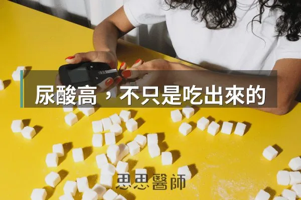
胰島素升高會抑制尿酸排出、促進重吸收，使尿酸與代謝症候群密切關聯，所以即使飲食克制，胰島素沒控制好尿酸還是難以降低。

粒線體問題是數量不足加燃料過量的容量問題，而非構造損傷，運動與低碳飲食可增加粒線體數量與調整代謝負載。

屍解研究發現無症狀人群體內普遍存在微型腫瘤，免疫系統透過清除、平衡、逃脫三階段持續監控，決定這些異常細胞會否發展成癌症。

長期高胰島素血症會刺激胰臟腺泡細胞過度生產消化酵素，引發反覆發炎，是胰臟癌癌前病變形成的關鍵驅動因素。

甲狀腺的五種飲食地雷包括麩質、乳製品、精製碳水、酒精與咖啡因，橋本氏患者可優先排除麩質和乳製品並觀察 8 到 12 週。

脂肪肝是肝細胞內游離脂肪酸等造成內質網壓力、粒線體損傷、細胞死亡，進而引發發炎與纖維化的連鎖傷害過程。

消除脂肪肝的運動強度沒有想像中重要，中等強度有氧運動足以有效改善肝臟脂肪，比高強度訓練更可持續。

腸漏症因緊密連結蛋白破壞增加腸道通透性，導致細菌內毒素進入血液，引發持續多年的全身發炎反應。

子宮肌瘤與雌激素代謝路徑相關，十字花科蔬菜、DIM補充、綠茶兒茶素與維生素D可改善代謝方向減緩肌瘤成長。

阿茲海默症可視為大腦特有的胰島素阻抗疾病，涉及胰島素訊號失調和澱粉樣蛋白清除障礙，代謝控制攸關腦部健康。

磨牙由腦幹控制非咬肌自主，與慢性壓力升高皮質醇、神經傳導失衡、鎂缺乏或睡眠呼吸中止症有關，需從根源改善。

不吃東西會傷胃的說法缺乏根據，胃酸在進食時分泌最多，胃潰瘍主因是幽門螺旋桿菌感染與長期使用 NSAIDs，而非空腹。

Lara Briden 的《Hormone Repair Manual》認為子宮肌瘤與雌激素主導有關，可從維他命D、飲食與生活著手，嚴重仍需就醫。

超過65℃熱飲被世衛列為2A級致癌物，反覆熱傷害導致食道黏膜慢性發炎累積基因突變，英國研究發現習慣喝超熱飲者食道鱗狀細胞癌風險高2.5倍。
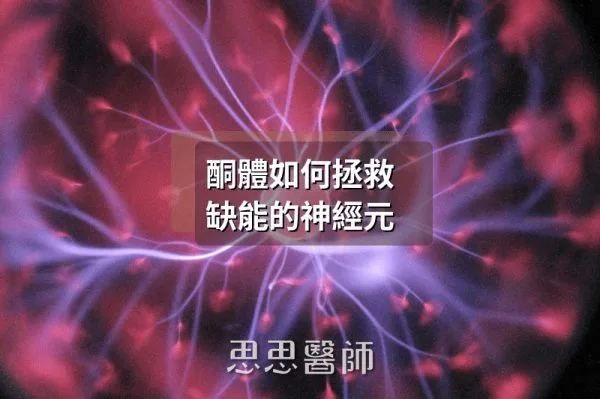
大腦靠葡萄糖供能，神經元胰島素阻抗時能使用酮體替代燃料，有助於神經退化性疾病的改善。
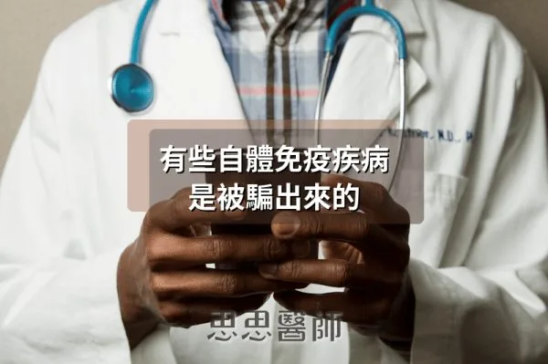
某些自體免疫疾病源於分子模擬現象，病原體和食物蛋白質結構相似引發免疫系統誤擊自身組織。

牙周病菌牙齦卟啉單胞菌會分泌牙齦蛋白酶，能穿越血腦屏障進入大腦，參與阿茲海默症的病程機制。
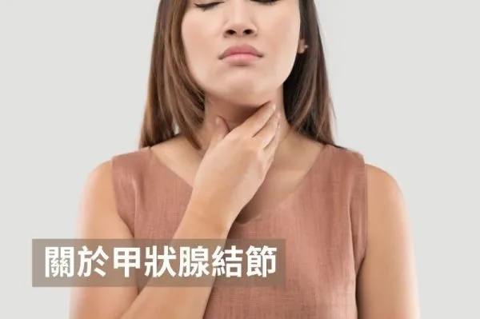
甲狀腺結節常見且多數良性，但應根據超音波特徵、大小與症狀進行分層評估，必要時進行細針抽吸確認。

長新冠症狀與纖維蛋白微血栓相關，納豆激酶具有強大纖溶活性，建議劑量為6,000至10,000 FU空腹服用，需搭配抗氧化營養素支持。

肥胖者的過量瘦素進入大腦會改變血管構造，過度激活交感神經，導致腎臟無法正常排鈉，所以高血壓與其說是鹽的問題不如說是脂肪的問題。

耳垂摺痕（Frank's Sign）反映全身微血管循環障礙，是心血管疾病和生物老化的外在預警訊號，尤其雙側深刻時預測準確度更高。

作者認為靜脈曲張不只是久站所致，女性荷爾蒙與 MMPs 會削弱血管壁，並建議補充維生素 C、攝取十字花科蔬菜、B群並改善便秘。

分享 Nick Norwitz 的 LDL 高達 574 mg/dL 但冠狀動脈電腦斷層血管乾淨的案例，強調高 LDL 須放在代謝背景理解。

依 Steven Gundry 醫師的觀點，老人斑是糖化、AGEs 與 IGF-1 過高等全身老化與發炎的警訊，建議少糖化飲食並增加植物性蛋白。
貝塞特氏症為全身性血管炎，反覆口腔和生殖器潰瘍，除了藥物控制應著重腸道修復、避免發炎食物和補充維生素D來穩定免疫。

多囊性卵巢症候群涉及胰島素阻抗和慢性發炎，控制胰島素是核心策略，透過低升糖飲食、運動、肌醇補充可改善排卵和月經。

長期能量不足會使 leptin 下降而抑制排卵，造成功能性下丘腦性閉經，恢復足夠的能量供應與營養密度才是讓月經回來的關鍵。

痛風的發生關鍵不在於血中尿酸濃度高低，而在單鈉尿酸鹽結晶在關節處形成引發的急性全身發炎反應。

反覆泌尿道感染者除了就醫，可考慮高濃度蔓越莓萃取（每天至少36毫克A型PACs）、D-甘露糖與益生菌作為長期預防。

睡眠呼吸中止症導致睡眠中反覆缺氧與交感神經興奮，除 CPAP 外減重、改睡姿與貼嘴膠帶可改善症狀。
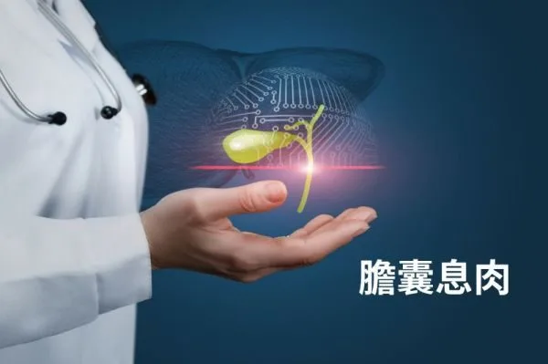
膽囊息肉多由發炎、膽固醇堆積引起，60-90%為假性息肉，應促進膽汁流動、增強胃酸、控制血糖和平衡荷爾蒙預防新息肉形成。
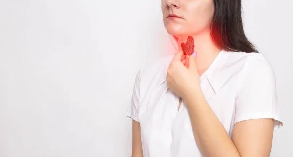
反轉T3（RT3）會佔據T3的位置，使甲狀腺症狀在抽血數據看似正常時仍持續，作者建議甲狀腺低下或補充後無改善者檢驗RT3。
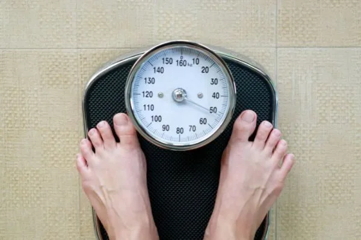
減重應避免每天量體重和過度依賴體組成數據，改用量圍度、計算週平均體重、拍照記錄等更準確的方式追蹤身形改變。
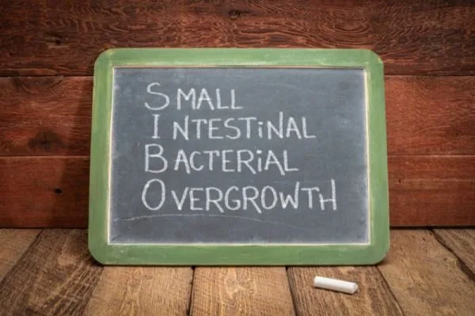
SIBO是小腸細菌過度生長導致的微生物失衡，症狀涉及多個系統，治療包括低FODMAP飲食、益生菌和草本抗菌療法。
腦霧由血糖波動、腸道菌群失衡、慢性發炎、荷爾蒙失衡、毒素累積和睡眠不足等多重因素引起，可通過調整飲食和生活方式改善。

胃酸反流常因胃酸不足而非過多引起，長期使用質子泵抑制劑有風險，可透過改善飲食習慣和補充消化酵素改善。
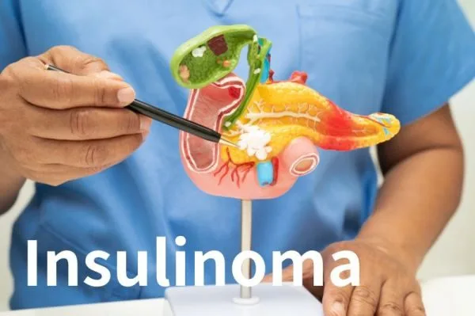
空腹胰島素異常偏高卻與飲食無關時，要考慮罕見的胰島素瘤，其90%以上為良性，診斷靠空腹生化與影像檢查，治療以手術為主。

小腸細菌過度生長導致多種症狀，減少纖維和高糖飲食、間歇性斷食、補充麩醯胺酸等營養素可有助改善狀況。
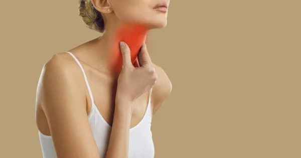
甲狀腺腫大主要源於碘缺乏與甲狀腺腫素過量攝取，十字花科蔬菜和大豆等食物含有甲狀腺腫素，碘攝取充足的人可適量食用。

便秘分為原發性和次發性，原發性由腸道神經功能障礙或心理壓力引起，次發性與多種疾病和藥物相關。
糖尿病神經病變在第一型、第二型糖尿病患者和糖尿病前期患者都可能發生，症狀從麻木到燒灼感不等。

妊娠紋是皮膚快速成長導致膠原蛋白和彈性蛋白斷裂，預防比治療重要，可用雷公根和維他命A預防。
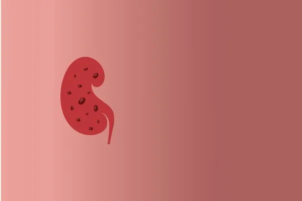
腎結石由尿液沉澱形成，最常見的是草酸鈣結石，可通過充足飲水、攝取檸檬酸和避免高草酸食物來預防。
腎上腺疲勞由長期壓力引起，應避免咖啡因和糖，多攝取營養食物並補充適應原、B群、鎂、維生素D，配合散步冥想改善。
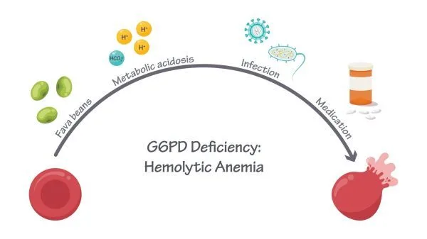
G6PD缺乏症患者紅血球缺乏足夠穀胱甘肽易受自由基威脅，應避免蠶豆、樟腦、阿斯匹林和特定抗生素等觸發因子。

飲食改變導致的落髮常由蛋白質不足、特定維生素礦物質缺乏或能量攝取不足引起，應確保充分蛋白質、原型食物、適量纖維並避免過度運動以改善掉髮。
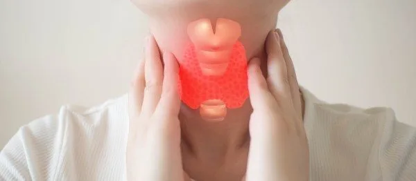
甲狀腺亢進是自體免疫疾病導致過度分泌甲狀腺素，患者因代謝加速需要更多蛋白質和營養，應補充鎂、鉀、肉鹼、硒等營養素，並避免海帶、碘和麩質等可能刺激免疫的食物。
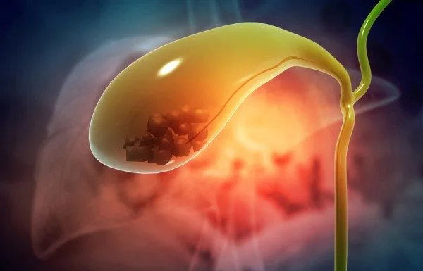
膽結石80%為膽固醇結石，需要超濃縮膽汁、膽汁淤積等條件才會形成，大部分無症狀無需治療，可透過補充維生素C、避免食物過敏、適度減重來改善。
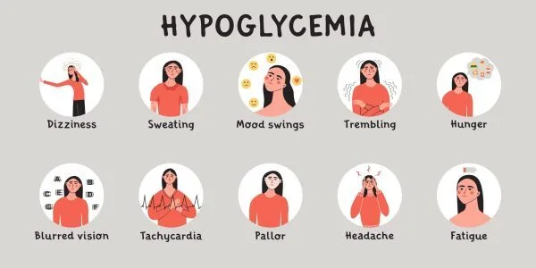
反應性低血糖與高胰島素水平和胰島素阻抗有關，患者常在進食後症狀改善卻形成惡性循環，可透過減少碳水、增加蛋白質和蔬菜、避免麩質和乳製品、檢測胰島素濃度來改善。
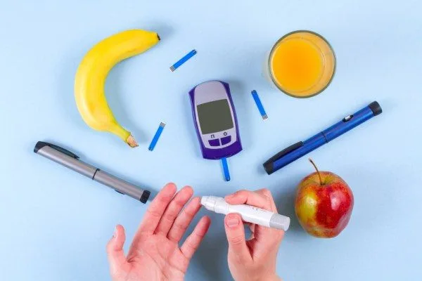
1.5型糖尿病屬自體免疫型糖尿病，常被誤診為第二型，患者體型通常較瘦，胰島素分泌會逐漸減少，可透過檢測胰島素、C肽和自體免疫抗體確診，飲食方面建議採低碳水全食物飲食。
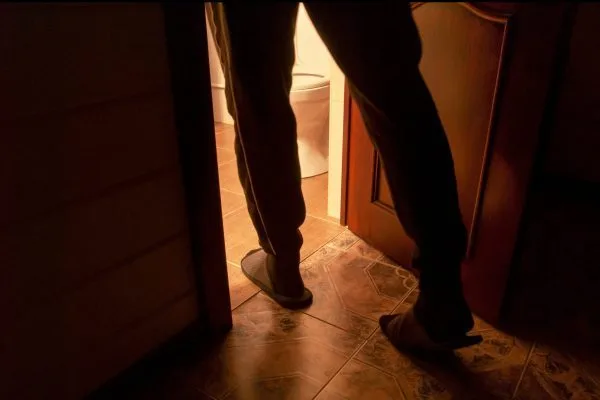
夜尿常見於攝護腺肥大、膀胱過動症、尿道感染等原因，可透過減少高糖食物、補充蔓越莓汁或D-甘露糖、控制晚間飲水量並配合日夜節律飲水等方式改善。

皮膚贅瘤與高胰島素濃度相關，可透過減少進食頻率、降低刺激胰島素的食物並延長空腹時間來預防復發。
女性運動員因能量不足導致飲食失調、無月經與骨質疏鬆的三合症，須透過增加營養攝取與減少訓練強度改善。
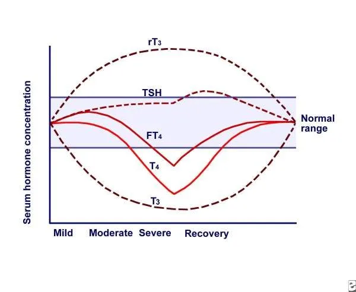
甲狀腺正常症是由非甲狀腺因素引起的功能受損，治療應著重改善根本原因如壓力、感染、飲食而非直接用藥。
甲狀腺低下會透過多個機轉導致LDL升高，血脂異常時應先檢驗甲狀腺功能，解決甲狀腺問題可改善血脂數值。